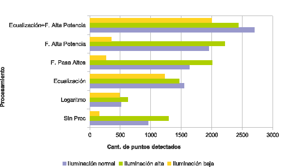
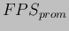

Siguiente: Implementación de prototipos Subir: Experimentos Anterior: Experimento 1 Índice General
Cuando se realiza el procesamiento en condiciones de baja iluminación (como se ha descripto en la Sec. 4.2.1), la detección no resulta del todo estable (se produce efecto de ``parapadeo'' seguido y repetitivo del objeto de RA). Dado que aquà se desea obtener conclusiones cuando el método es ``estable'' en la detección, se realizaron dos pruebas en condiciones de iluminación  y
y  , estableciéndose empÃricamente el umbral hessiano para lograr un equilibrio entre el tiempo de procesamiento y la correcta detección del objeto. La aplicación de alguna de las técnicas mencionadas en el ``Pre-Procesamiento de Iluminación y Realce de detalles'' no fue necesaria, ya que con las condiciones ambientales se obtuvieron resultados aceptables. Si bien aplicar alguna de estas técnicas mejora la calidad de detección, también incrementa el tiempo de procesamiento y es por ello que se deja a criterio del usuario la decisión de aplicarlas, según lo considere necesario. Las pruebas se definieron como:
, estableciéndose empÃricamente el umbral hessiano para lograr un equilibrio entre el tiempo de procesamiento y la correcta detección del objeto. La aplicación de alguna de las técnicas mencionadas en el ``Pre-Procesamiento de Iluminación y Realce de detalles'' no fue necesaria, ya que con las condiciones ambientales se obtuvieron resultados aceptables. Si bien aplicar alguna de estas técnicas mejora la calidad de detección, también incrementa el tiempo de procesamiento y es por ello que se deja a criterio del usuario la decisión de aplicarlas, según lo considere necesario. Las pruebas se definieron como:
Para cada ciclo de la fase de ejecución de cada prueba se computaron los siguientes datos:
Si se observa el diagrama del ``método propuesto'' en la Fig. 3.2, se notará que las operaciones marcadas con (*) pueden ignorarse si se cumple una determinada condición en el ciclo de ejecución, sin impedir que se realice el enriquecimiento de la realidad. Esto como consecuencia del buffer de transformaciones descripto en la sección 3.9. AsÃ, por ejemplo si la comprobación de contornos convexo y vértices válidos (CCVV) no se cumple, entonces no se calcula la transformación perspectiva (TP); o si la homografÃa no es detectada, luego, no se realiza la CCVV y por ende tampoco la TP; aún más, si no se detecta movimiento en al escena, entonces ninguno de los procesos anteriormente mencionados es ejecutado. AsÃ, todos estos condicionales producen que el tiempo promedio de procesamiento en el método propuesto disminuya cuando alguna (o todas) las operaciones son ignoradas. Adicionalmente se ha definido un proceso que denominamos ``método estándar'' que comprende sólo las siguientes operaciones de la Fig. 3.2: captura del flujo de video, conversión a escala de grises, extracción y descripción de caracterÃsticas (en toda la imagen), búsqueda de correspondencias, estimación de la homografÃa, transformación perspectiva del objeto virtual y enriquecimiento de la realidad.
En el gráfico de la Fig. 4.7, se pueden observar los tiempos promedios en la fase de ejecución para el método propuesto y el método estándar en P1. Para analizar los datos, se calcularon los FPS promedio ( ) para el proceso de ejecución. De ello, se pudo advertir que el valor de para el método estándar fue de  FPS, mientras que para el propuesto fue de FPS, lo cual constituye una mejora notable en el tiempo de procesamiento. Dicho de otro modo, la lógica de los condicionales planteados para mejorar el tiempo de procesamiento y la detección del objeto evidencia un gran incremento en los y esto se debe en gran parte a que evita el proceso de extracción y descripción de caracterÃsticas (observar que la barra verde en el gráfico representa casi la mitad de tiempo sobre la barra violeta).
En lo que respecta a los tiempos en los diferentes procesos, se puede visualizar en la Fig. 4.7 que la extracción y descripción de caracterÃsticas es la que más tiempo requiere, a pesar de que se minimizó el procesamiento en un área de la imagen (BR) como se explicó en la Sec. 3.4. Experimentalmente se comprobó que si el área BR en la que se extraen caracterÃsticas es del 50% de la imagen patrón de pÃxeles, el tiempo de procesamiento representa aproximadamente un 42% del tiempo total que se requiere para extraer las caracterÃsticas en la totalidad de la imagen.
El segundo proceso que más tiempo consume es la estimación de la homografÃa por tratarse de un método iterativo que estima la matriz y refina las coincidencias. La transformación perspectiva que involucra una interpolación, ocupa el tercer lugar, seguida de la búsqueda de correspondencias, la detección de movimiento y finalmente, la CCVV que está compuesta de operaciones triviales.
En lo que respecta a total de puntos detectados y las potenciales correspondencias válidas, para P1 se detectaron 192 puntos claves en la imagen patrón y un promedio de 130 puntos en la imagen del flujo de video. De los mismos se obtuvo (en promedio) 38 pares de coincidencias potencialmente válidas, observándose un máximo de 81 pares.
En la Fig. 4.8c a 4.8f se presentan diferentes capturas del resultado final del método, utilizando como imagen patrón la Fig. 4.8a y como objeto de realidad aumentada la imagen de la Fig. 4.8b. El umbral hessiano se estableció a 3500 y la escena se encuentra en condición  de iluminación.
de iluminación.
|
[][] [][] [][] [][] |
En lo que respecta a la prueba P2, los detalles de los resultados no serán expuestos aquà para no extender este informe. Sin embargo, se debe mencionar que de su análisis se obtuvieron resultados similares en los órdenes de magnitud de tiempos por procesos. La cantidad de puntos claves detectados, no puede ser comparada con P1, ya que se trata de un umbral e imagen diferente, en condiciones diferentes de iluminación. De todas formas, podemos decir que la cantidad de puntos detectados en la imagen patrón, se vio incrementada a pesar de aumentar el umbral hessiano, debido a que la imagen sobre la cual se aplicó poseÃa mayor luminosidad y, por lo tanto mayores detalles apreciables.
christian 2014-01-31